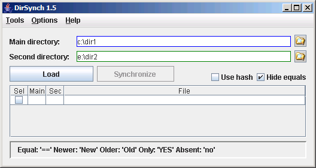

DirSynch

How to use
Tipical usage
- Select the main directory.
- Select the second directory.
- Hit the "Load" button and wait for the file list to be filled.
- Analyse the list and uncheck the files you don't want to synchronize (you can use the Tools->Select menu).
- Hit the "Synchronize" button and wait until it finishes (a progress bar will be shown).
- If the operation is successful, when you click "OK" in the "Success" message window the list will be reloaded.
Needed files
- DirSynch.jar
- lib\swing-layout-1.0.jar
The "swing-layout-1.0.jar" comes from NetBeans.
Files for this help
- DirSynch-help.html
- main-screen-small-1.5.png
- v.gif
- x.gif
Optional files
Command line parameters
I use this to create specific icons on my desktop, for each dir I usually synchronize.
java[w] -jar DirSynch.jar [Params]
Params:
-main [main dir path] Set the main dir.
-sec [sec dir path] Set the secondary dir.
-keep Keep backups.
-prop [properties file path] DirSynch.properties file path.
--help | -help | -h | /? Show this usage message.
Tools
- Select
- All
- Select all files, except the equal ones.
- None
- Unselect all files.
- Only YES/no
- Select only the files that exists in one dir and not in the other.
- Only in main dir
- Select only the files that exists in the main dir and not in the second.
- Only in sec dir
- Select only the files that exists in the second dir and not in the main.
- Newer in main
- Select only the files that are newer in main dir than in the second.
- Newer in sec
- Select only the files that are newer in the second dir than in the main.
- Sel/Unsel with regexp...
- Let the user enter a regular expression (Java syntax) to select or unselect the files.
This command does not change the selection status of the files that don't match.
Options
- Include subdirs
- If set, include all subdirectories, if not, ignore the subdirectories. Default: checked.
- Use hash
- If this option is set, the file comparison will be performed in the following way:
- Compare the files sizes.
- Calculate and compare the files MD5 hash, if the sizes are the same.
- Compare the files times, if the MD5 hashes are different.
If the option is unset, the file comparison will be performed in the following way:
- Compare the files times.
- Compare the files sizes, if the times are the same.
WARNING: Calculating hashes can be a very slow process! Use with care, specially if you're synching lots of files or large files.
- Hide equals
- If this option is set, the files considered equals are not shown in the list.
- Keep backup
- If this option is set, the destination files are copied with ".bak" extension before overwritting.
- Synch times for same hashes
- Sometimes files that are equals (having the exact same content -- and the same hash) have different times.
If this option is set, these files will have only the times synchronized without being copied again.
This option will slow a little the process, because the hash will be calculated for files with same size and different times.
- Load options...
- Load the options (including the main and sec dirs) from a ".properties" file.
- Save options...
- Save the current options (including the main and sec dirs) to a ".properties" file.
The .nosynch file
To avoid synching some directory or file, just put it in a file (one per line) and save this file with the name ".nosynch" or "_nosynch". Note that if you don't want to synch this file, you also will need to put it on the list. The files listed in the nosynch file will not be shown in the list.
The file can be located in one of this places:
- In the main dir.
- In the second dir.
- In the user dir (according to the operating system).
Notice that all files found in those places will be loaded and used to avoid synching. Currently only exact matches are used, no wildcards are supported and the case must be the same (case sensitive).
All files and directories with the names listed will be skipped. For example: if you put "TEMP" in the _nosynch file and there are two directories with this name, in the main dir and inside a subdir "MyDir", both will be skipped and all its subdirs.
The nosynch files are read every time the list is loaded, so you can change it "on the fly", without closing the program.
Wildcards
The lines in the .nosynch file that starts with the character "|" (pipe) are processed as
regular expressions. The syntax is the one from java.util.regex.Pattern class.
For example:
- |.+\.zip
- This line matches all files with the extension ".zip" (case ignored), so those files won't be synchronized.
Known issues
If two files have the same times, but different sizes, they are marked as "BIG" (bigger) and "sml" (smaller).
DirSynch ignores those files when synchronizing.
Roadmap
Next release (v1.6):
- Bug: if synching only times and the file is open, there is no error message and the synch fails.
- _onlysynch
- Wildcard characters (*, ?) in _onlysynch
- Interface for the options that are only in the .properties file.
Future releases:
- Hash only small files (smaller than ...)
- Verify after copy (with hash?)
- DirSynch.properties update (verify.copy)
- Option to overwrite or append to log file
- DirSynch.recent
- Interface to edit _nosynch's and _onlysynch's files
- "Add to _nosynch" context menu
- Dir set to synch
- Disable Load button if any dir empty or inexistent
- Tree table view instead of a table (similar to EnCase®)
- Synch a directory with a zip file
- Let the user decide about the action in BIG/sml files
- Toolbar with common tools (check all/none/with regexp/...)
v1.5.1 (21/05/2008):
- Added and changed some INFO and DEBUG levels log messages
- Bug: when used the command line parameters to specify the main and sec dirs, the load config from .properties file fails to update the dirs
v1.5 (17/05/2008):
v1.4.1 (31/01/2008):
- Added some INFO level log messages
v1.4 (26/01/2008):
- New option: Only adjust times if files have same hash value
- Fix bug for files with/without "/"
- Log levels: NONE, ERROR, WARNING, INFO, DEBUG
- Calc hash only for files with same size when synching times
- DirSynch.properties creation
- Options:
hash.enabled=[boolean] (default: false)
hash.onlysmall=[boolean] (default: true)
hash.smallmaxsize=[size in Kb] (default: 256)
subdirs.include=[boolean] (default: true)
hide.equals=[boolean] (default: false)
log.level=[NONE, ERROR, WARNING, INFO, DEBUG] (default: WARNING)
log.file=[path to file] (default: .\DirSynch.log)
- Command line new option: -prop=[properties file]
- Mnemonics in menu itens
v1.3 (13/01/2008):
- Progress bar in synch (show the file name being copied and the percent of number of files)
- Progress bar in load.
- Select / Unselect : all/YES-no/New-old
- Option "Include subdirs" (default true)
- New interface for options (menu)
v1.2:
- Show file status:
"Filename.ext - Main: 10/11/06 17:07:09 10.3Kb - Sec: 10/12/06 8:07:23 10.4Kb''
- Log failure details
- Use hash (true = Size -> Hash -> Time; false = Time -> Size)
- Help
- About
v1.1:
- Checkbox to select/unselect itens
- Implement synch
- _nosynch
- Disable Sync button when any dir changed
- Fix bug: duplicated entries (one for Main, one for Sec)
- Option "Hide equals"